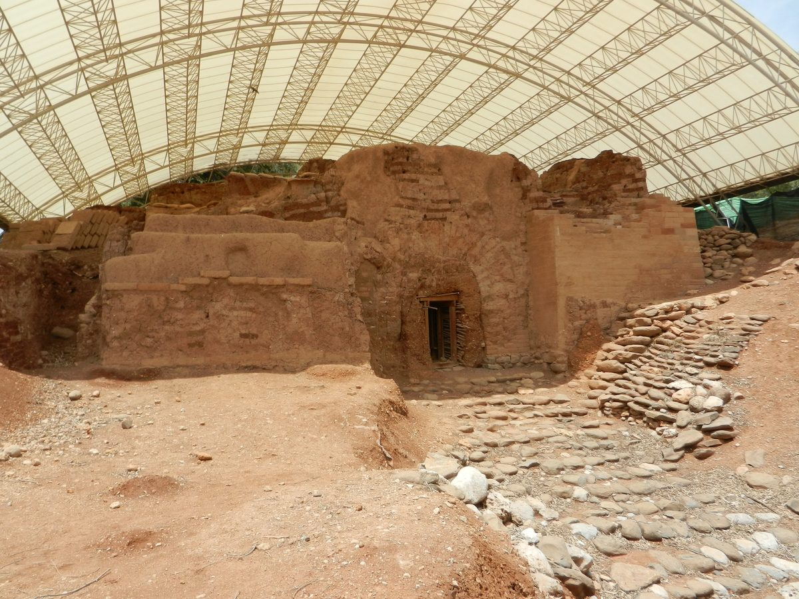

Jueces 18 — La Traducción Mister

La puerta de adobe con arco de la ciudad que tomaron los danitas, excavada en Tel Dan y fechada por lo general en la Edad del Bronce Medio, siglos antes de que llegaran los danitas (según se informa). Era la puerta de Lais, la ciudad «tranquila y confiada» de los versículos 7 y 27, mucho antes de que el capítulo le dé su nuevo nombre.

Notas del traductor — versículo por versículo
Sin heredad. El capítulo empieza con el estribillo de Jueces 17:6 (ya en estas páginas), «no había rey en Israel», y con una tribu sin tierra: «hasta aquel día no le había tocado heredad». Josué le había sorteado a Dan un lote, el séptimo (Josué 19:40), pero «el límite de los hijos de Dan salió de ellos» (19:47), y «el amorreo empujó a los hijos de Dan hacia la montaña» (Jueces 1:34), todos ya en estas páginas. La TNM 1987 dice «hasta aquel día no les había caído herencia en medio de las tribus de Israel»; la RV60 «porque hasta entonces no había tenido posesión entre las tribus de Israel», y la NVI lo explica, «no había recibido la parte que le correspondía».
Cinco espías. La tribu envía cinco «hombres valientes» de Zora y de Estaol, la tierra de Sansón (Jueces 13:25, ya en estas páginas), «para espiar la tierra». Las palabras «espiar la tierra» están en cuatro versículos de la Biblia hebrea: el «Moisés … me envió desde Cades-barnea a espiar la tierra» de Caleb (Josué 14:7, ya en estas páginas), y tres veces en este capítulo (vv. 2, 14, 17). Los dos espías de Josué hallaron una casa en Jericó (Josué 2:1, ya en estas páginas); estos cinco hallan también una, la de Miqueas, y pasan allí la noche.
Una voz conocida. «Reconocieron la voz del joven, el levita». El capítulo no dice cómo: tal vez lo conocían, o conocían su manera de hablar, como una sola palabra había delatado la tribu de un hombre en el Jordán (Jueces 12:6, ya en estas páginas). Sus tres preguntas, «¿Quién te trajo acá? ¿Qué haces en este lugar? ¿Qué tienes tú aquí?», Rashi las oye como palabras de Dios a Moisés en la zarza, «No te acerques acá» (Éxodo 3:5, ya en estas páginas) y «¿Qué es eso que tienes en tu mano?» (Éxodo 4:2, ya en estas páginas), como si lo supieran nieto de Moisés (v. 30). Su respuesta es un salario: «me contrató», sakhar, el verbo de Abimelec, que «contrató a hombres vanos e insensatos» con plata de la casa de Baal-berit (Jueces 9:4, ya en estas páginas).
«Vayan en paz». «Consulta a Dios», dicen, «para que sepamos si prosperará el camino por el que vamos»: hatatsliach, de tsalach, el verbo del espíritu que «irrumpía» sobre Sansón. El sacerdote de la imagen responde en nombre de Jehová: «El camino por el que van está delante de Jehová». Las palabras nokhach YHWH, «delante de Jehová», están en un solo versículo de la Biblia hebrea, y pueden significar que Jehová aprueba el camino, o solo que está bajo su mirada. La RV60 conserva la ambigüedad, «delante de Jehová está vuestro camino en que andáis», y también la TNM 1987, «Delante de Jehová está su camino en que van»; la NVI la convierte en aprobación.
Tranquilo y confiado. En Lais los espías ven un pueblo que «vivía confiado, a la manera de los sidonios, tranquilo y confiado». La pareja shoqet u-voteach está en tres versículos de la Biblia hebrea: aquí, en el versículo 27 cuando la espada cae sobre ellos, y en Isaías 32:17, donde la tranquilidad y la confianza para siempre son el fruto de la justicia. Layish es también una palabra poética para el león (Job 4:11 y Proverbios 30:30, ninguno todavía en estas páginas), y Moisés había dicho: «Dan es cachorro de león, que salta desde Basán» (Deuteronomio 33:22, ya en estas páginas).
Una frase difícil. Las palabras que siguen, ve-ein makhlim davar ba-arets yoresh etser, dicen palabra por palabra «y sin quien avergüence cosa en la tierra, poseedor de dominio», y su sentido es incierto. Esta traducción las lee como una tierra donde nada avergonzaba al pueblo y ningún gobernante tenía poder sobre él. La RV60 dice «ni había quien poseyese el reino»; la TNM 1987 «no había ningún conquistador opresivo que anduviera molestando»; la NVI lee un sentido del todo distinto, «Gozaban de prosperidad y no les faltaba nada». «No tenían trato con nadie» cierra el versículo; ahí el texto griego A tiene «con Siria», leyendo Aram por adam, dos palabras cuyas letras hebreas se distinguen por un trazo fácil de confundir.
«Muy buena». El informe de los espías es el de Josué y Caleb, que dijeron «la tierra es muy, muy buena» (Números 14:7, ya en estas páginas), con un reproche añadido: «¿Y ustedes se quedan callados? No sean perezosos». La TNM 1987 dice «Y ustedes titubean. No sean perezosos». «Dios la ha entregado en su mano» son palabras de conquista, dichas de una ciudad que no está en ninguna lista de la tierra prometida a Israel; y «un lugar donde no falta nada» es la tierra prometida de Moisés, «en la cual nada te faltará» (Deuteronomio 8:9, ya en estas páginas). La RV 1909 dice «lugar donde no hay falta de cosa que sea en la tierra».
Mahané-dan. Seiscientos hombres salen «ceñidos con armas de guerra», y su campamento da nombre a un lugar «hasta hoy»: Mahané-dan, «el campamento de Dan». El Mahané-dan de Sansón estaba «entre Zora y Estaol» (Jueces 13:25, ya en estas páginas); este está «detrás de Quiriat-jearim», en Judá. Si son un lugar o dos, los capítulos no lo dicen. «Detrás» es el oeste, porque el hebreo mira al este: la RV60 dice «está al occidente de Quiriat-jearim» y la TNM 1987 «Está al oeste de Quiryat-jearim», la RV 1909 «está detrás de Chîriath-jearim». Quiriat-jearim es una de las ciudades gabaonitas que Israel juró perdonar (Josué 9:17, ya en estas páginas).
La lista que no se está quieta. Los espías nombran el tesoro: «un efod y terafim, y una imagen tallada y fundida», pesel u-massekhah juntos como en Jueces 17:3–4 (ya en estas páginas). Cuando entran los cinco, la pareja se separa: «la imagen tallada, el efod, los terafim y la imagen fundida» (v. 17), luego «la imagen tallada del efod, y los terafim, y la imagen fundida» (v. 18), y el sacerdote se lleva «el efod, los terafim y la imagen tallada», sin imagen fundida (v. 20). Los dos textos griegos leen «la imagen tallada y el efod» en el versículo 18 y añaden la imagen fundida en el versículo 20. La RV60 dice «Mirad, por tanto, lo que habéis de hacer».
Paz a la puerta. «Le preguntaron por su bienestar», sha’al le-shalom, el shalom de su propio «Vayan en paz» (v. 6), mientras seiscientos hombres armados esperan a la entrada de la puerta.
«Padre y sacerdote». «¡Calla! Pon la mano sobre la boca y ven con nosotros, y sé para nosotros padre y sacerdote». Miqueas le había ofrecido el mismo título (Jueces 17:10, ya en estas páginas); los danitas le ofrecen una tribu y un clan en lugar de «la casa de un solo hombre». La RV60 dice «Calla, pon la mano sobre tu boca»; la NVI «No digas ni una sola palabra».
Un corazón alegre. «Se alegró el corazón del sacerdote»: vayitav lev. La frase está en cuatro versículos de la Biblia hebrea: aquí, dos veces en el capítulo siguiente, cuando el suegro de otro levita le insta a que alegre su corazón (Jueces 19:6 y 19:9), y de Booz después de su cena (Rut 3:7), ninguno todavía en estas páginas. Es la raíz del «Ahora sé que Jehová me hará bien» de Miqueas (Jueces 17:13, ya en estas páginas): el bien le llega al sacerdote. La RV60 dice «Y se alegró el corazón del sacerdote»; la TNM 1987 «el corazón del sacerdote se complació». La columna pone delante «a los niños, el ganado y el bagaje», donde no los alcanza una persecución que venga por detrás; la TNM 1987 llama al bagaje «las cosas de valor».
Convocados. Los vecinos de Miqueas «fueron convocados», niz’aqu, el verbo del llamamiento a las armas, como cuando «los hombres de Efraín fueron convocados» contra Jefté (Jueces 12:1, ya en estas páginas). Los danitas se vuelven y le preguntan: «¿Qué te pasa, que has sido convocado?».
«Mis dioses que yo hice». Miqueas responde: «Mis dioses que yo hice me los han quitado, y al sacerdote, y se van; ¿qué más me queda?». El hombre llamado «¿Quién como Jehová?» (Jueces 17:1, ya en estas páginas) llora a unos dioses que hizo con su propia plata. La RV 1909 dice «Mis dioses que yo hice, que lleváis juntamente con el sacerdote»; la TNM 1987 «Mis dioses que yo hice, ustedes los han tomado».
Amargados de alma. Los danitas lo despiden con una amenaza: «hombres amargados de alma caigan sobre ustedes». Las palabras marei nefesh están en cuatro versículos de la Biblia hebrea; uno es el aviso de Husai de que los hombres de David están «amargados de alma, como la osa a la que le han robado los cachorros» (2 Samuel 17:8), y las mismas palabras en singular describen a Ana, «amargada de alma» en Siló (1 Samuel 1:10, ya en estas páginas). La TNM 1987 conserva «hombres amargados de alma»; la RV60 dice «los de ánimo colérico». Miqueas «vio que eran más fuertes que él», y se volvió a su casa; después de esto solo aparece como el que hizo la imagen (vv. 27 y 31).
La espada y el fuego. Los danitas vienen «sobre un pueblo tranquilo y confiado, y los hirieron a filo de espada, y quemaron la ciudad con fuego»: las palabras de Jericó, herida «a filo de espada» y quemada «con fuego» (Josué 6:21 y 6:24, ya en estas páginas). Lejos de Sidón, Lais no tuvo libertador; la TNM 1987 dice «Y no hubo libertador», y que ellos «no tenían nada que ver en absoluto con la humanidad».
Bet-rehob. La ciudad estaba «en el valle que pertenece a Bet-rehob». Los espías de Moisés habían llegado «hasta Rehob, en Lebo-hamat» (Números 13:21, ya en estas páginas). Josefo la sitúa «no lejos del monte Líbano y de las fuentes del Jordán menor», a un día de camino de Sidón, y llama Dana a la nueva ciudad (Antigüedades 5.178, numerado 5.3.1 en Whiston).
Un nombre nuevo. «Llamaron a la ciudad Dan, del nombre de Dan su padre … pero Lais era antes el nombre de la ciudad». Las palabras «antes el nombre de la ciudad» están en dos versículos de la Biblia hebrea: aquí, y en Betel, «pero Luz era antes el nombre de la ciudad» (Génesis 28:19, ya en estas páginas). En los dos lugares el griego leyó mal el hebreo ve-ulam, «pero», como parte del nombre antiguo: Génesis recibe una ciudad «Oulamlouz», y aquí el texto griego B «Oulamais». Josué 19:47 cuenta la misma conquista con el nombre Lesem, y Abram ya había perseguido a sus enemigos «hasta Dan» con el nombre posterior (Génesis 14:14, ya en estas páginas).
Una letra colgada. En el texto masorético la nun de «Manasés» está escrita sobre la línea: Mnsh. Sin ella las letras dicen Mosheh, Moisés, y Gersón era hijo de Moisés, llamado así «porque dijo: Forastero he sido en tierra ajena» (Éxodo 18:3, ya en estas páginas). El Talmud dice que se le llama «hijo de Manasés» porque obró como obró Manasés, el rey idólatra de Judá (Bava Batra 109b); Rashi, citándolo, dice que la nun se puso por respeto a Moisés y se dejó colgada para mostrar que en realidad era nieto de Moisés. Esta traducción imprime el nombre como lo escribe el hebreo, con la letra en alto. El capítulo nunca nombra al joven levita de Jueces 17:7 (ya en estas páginas); el Talmud lee a él y a este Jonatán como un mismo hombre.
Moisés o Manasés. El estante se divide. La RV 1909 imprime «hijo de Manasés»; la RV60 «hijo de Moisés», y también la TNM 1987, «Jonatán hijo de Guersom, hijo de Moisés», y la NVI, «hijo de Guersón y nieto de Moisés». El texto griego A tiene «hijo de Moisés», el texto B «hijo de Manasés».
Hasta el exilio. Los hijos de Jonatán fueron sacerdotes de los danitas «hasta el día del exilio de la tierra»; el versículo no dice qué exilio, y Rashi lo pone en los días de Senaquerib. La TNM 1987 dice «hasta el día en que el país fue llevado al destierro», la RV 1909 «hasta el día de la transmigración de la tierra». La imagen de Miqueas estuvo en pie «todos los días que la casa de Dios estuvo en Siló», donde la congregación había asentado la tienda de reunión (Josué 18:1, ya en estas páginas): la propia «casa de Dios» de Miqueas (17:5) junto a la de Siló. La Douay cierra el versículo con el estribillo, «In those days there was no king in Israel».
Patrones que vale la pena recordar
Dónde esta traducción mantiene las palabras exactas y distintas: «espiar la tierra» para leraggel et ha-arets, como con Caleb; «contratar» para sakhar, como con Abimelec; «delante de Jehová» para nokhach YHWH; «tranquilo y confiado» para shoqet u-voteach; «detrás» para achar en Quiriat-jearim; «una imagen tallada y fundida» para pesel u-massekhah cuando la pareja se nombra junta, y «la imagen tallada» y «la imagen fundida» cuando se separa; «padre y sacerdote», como lo dijo Miqueas; «se alegró el corazón del sacerdote» para vayitav lev; «convocados» para niz’aq, como en Jueces 12:1; «amargados de alma» para marei nefesh; «pero Lais era antes el nombre de la ciudad», como en Betel; y «Manasés» con la letra en alto, como lo escribe el hebreo.
Ecos pagados. El estribillo de Jueces 17:6 abre el capítulo. El «padre y sacerdote» de Miqueas (17:10) es la oferta de los danitas, su «Jehová me hará bien» (17:13) se vuelve el corazón alegre del sacerdote, y su imagen tallada y fundida de 17:3–4 se va al norte. Se nombra al Gersón de Éxodo 2:22 (ya en estas páginas) y de 18:3, y la conquista de Lesem de Josué 19:47 se cuenta entera. El «antes el nombre de la ciudad» de Betel en Génesis 28:19 (ya en estas páginas) se dice de Dan, y la espada y el fuego de Jericó en Josué 6:21–24 caen sobre Lais.
Ecos sembrados. El corazón alegre vuelve en Jueces 19:6 y 19:9, cuando a otro levita le instan a quedarse y festejar; «amargados de alma» vuelve para los hombres de David en 2 Samuel 17:8; Jeroboam pone un becerro de oro en Dan en 1 Reyes 12:29; y Siló pierde el arca en 1 Samuel 4. Ninguno de ellos está todavía en estas páginas.
Próxima entrega de este libro: Jueces 19 — otro levita de la serranía de Efraín: su concubina lo deja y se va a la casa de su padre en Belén, el suegro lo retiene festejando día tras día, y en el camino de vuelta se detienen a pasar la noche en Guibeá de Benjamín, donde nadie los recibe sino un anciano de Efraín —y la noche que sigue.